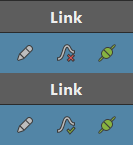

您可以使用 Live Link 将动画数据从 Maya 中的对象直接流式传输到 Unreal 中的链接序列。如果要在 Maya 中制作动画并查看它如何实时影响 Unreal 序列，这将非常有用。使用此方法是保留两个程序之间的动画曲线的唯一方法，但是它比流式传输对象数据慢，因为每次编辑都需要更新多个帧。
无论是流式传输对象还是动画数据，都必须首先将对象添加到 Maya 的“连接列表”(Connection List)中：
在当前 Maya 场景和 Unreal 项目中加载对象（无需将对象加载到当前关卡）。
为确保兼容性，我们建议您先将对象从 Maya 导出到 Unreal。
在 Maya 中，选择要链接的对象的基本节点。对于角色，这是其关节骨架的根（而不是控件）。
转到 Unreal Live Link 窗口，然后单击“添加当前选择”(Add Selection)。这会将对象添加到 Maya 的“连接列表”(Connection List)，并自动为其指定“类型”(Type)。可以通过手动单击“类型”(Type)下拉菜单来更改类型。不要将多个具有相同名称的对象添加到此列表。
（可选）将“对象名称”(Object Name)从默认名称更改为更易于用户使用的名称。
完成此操作后，后续步骤将取决于要链接的对象的类型。
要将角色动画数据从 Maya 流式传输到 Unreal 序列，需要与仅链接角色略有不同的过程。
在 Maya 中，打开 Unreal Live Link 窗口。
在已设置动画的角色旁边，单击“链接”(Link)下的插件图标。将显示“Unreal 链接资产选择”(Unreal Link Asset Selection)窗口。
在顶部（“链接到骨架”(Link to skeleton)）中，选择要链接到的 Unreal 资产。 确保要链接到的 Unreal 资产源自同一 Maya 角色，以确保兼容性。
在底部（“保存到动画序列”(Save to anim sequence)）中，从涉及该角色的现有序列列表中选择动画序列。或者，可以通过在下面的文本字段中输入新动画序列来创建新动画序列。新序列的前缀必须是在 Game（又名：Content）文件夹之后开始的 Unreal 项目路径。
单击“链接”(Link)。如果创建了新序列，它将被添加到 Unreal 项目中。
在 Unreal 中，双击“内容浏览器”(Content Browser)中的序列，以在“动画编辑器”(Animation Editor)窗口中查看该序列。
在“预览场景设置”(Preview Scene Settings)选项卡中：
现在，如果在 Maya 中拖动时间滑块或在 Unreal 中拖动播放指针，您会看到这两个软件保持同步。您还可以查看 Maya 的“曲线图编辑器”(Graph Editor)和 Unreal 的“动画序列曲线编辑器”(Animation Sequence Curve Editor)之间的实时动画曲线更新。
Unreal Live Link 2.4.1 版引入了在“已烘焙”(Baked)与“未烘焙”(Unbaked)之间进行选择的选项，以指示如何在 Unreal 中表示融合变形和自定义属性动画曲线。

设置为“未烘焙”(Unbaked)（红色十字叉）时，Unreal Live Link 将尝试在 Unreal 中重新创建在 Maya 中看到的动画曲线的形状。设置为“已烘焙”(Baked)（绿色对勾）时，将先在每个关键帧处对动画曲线进行采样，然后再将动画曲线流式传输到 Unreal。
如果使用已烘焙的曲线，则流式传输到 Unreal 的数据相对较多，但支持 Maya 中任意复杂的场景设置，包括针对融合变形添加对“封套”(Envelopes)和“分组”(Group)值的支持。相反，如果使用未烘焙的曲线，则流式传输到 Unreal 的数据相对较少，但仅支持简单设置，例如，在 Maya 中直接沿曲线为融合变形权重设置动画。
时间滑块 -> 播放指针同步包括调整播放范围的大小。如果要将多个角色动画存储在不同的帧范围中，这将会很有帮助。
要查看融合变形中的更改，必须在 Maya 中为它们设置关键帧。如果在链接对象时添加新的融合变形，则需要从 Maya 的“实时链接编辑器”(Live Link Editor)中移除该对象，然后将该对象重新导出到 Unreal，重新导入该对象，然后再次设置链接，才会看到它们显示在 Unreal 中。
要将动画数据从 Maya 流式传输到 Unreal 序列，需要与仅链接灯光、摄影机或网格略有不同的过程。
流式传输动画数据时的兼容功能列表与仅连接它们时的兼容功能列表不同。有关详细信息，请参见兼容功能。
在 Maya 中，打开 Unreal Live Link 窗口。
在对象旁边，单击“链接”(Link)下的插件图标。将显示“Unreal 链接资产选择”(Unreal Link Asset Selection)窗口。
在顶部（“链接到角色”(Link to actor)）中，选择要链接到的 Unreal 角色。或者，可以通过在文本字段中键入名称并单击“创建”(Create)来创建新角色类。为了获得最大的灵活性，我们建议链接到蓝图。
在底部（“保存到关卡序列”(Save to level sequence)）中，选择关卡序列。或者，可以通过在下面的文本字段中输入新关卡序列来创建新关卡序列。新序列的前缀必须是在 Game（又名：Content）文件夹之后开始的 Unreal 项目路径。
单击“链接”(Link)。如果创建了新序列，它将被添加到 Unreal 项目中。
在 Unreal 中，双击“内容浏览器”(Content Browser)中的序列，以在“序列器”(Sequencer)中查看该序列。
现在，如果在 Maya 中拖动时间滑块或在 Unreal 中拖动播放指针，您会看到这两个软件保持同步。您还可以查看 Maya 的“曲线图编辑器”(Graph Editor)和 Unreal 的“动画序列曲线编辑器”(Animation Sequence Curve Editor)之间的实时动画曲线更新（请注意，对于变换数据，您会在每一帧上看到一个关键帧）。
在将复杂的角色动画数据从 Maya 流式传输到 Unreal 时，您可能会注意到，由于在这两个软件之间传递的信息量很大，性能会降低。如果发生这种情况，可以使用 Unreal Live Link 窗口右上角的“暂停”(Pause)按钮暂停链接。当暂停链接时，Maya 将仅停止发送角色动画数据（灯光、摄影机和网格动画数据以及流式传输对象数据部分中提及的所有内容将继续发送）。然后，可以执行一系列编辑，然后取消暂停链接以一次发送所有这些编辑。
此页面上的工作流与包含“实时链接控制器”节点的蓝图不兼容。仅当流式传输对象数据时，才支持这些工作流。如果要链接到包含“实时链接控制器”节点的蓝图，应该禁用其上的“评估实时链接”(Evaluate Live Link)以避免错误。